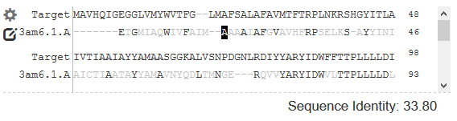
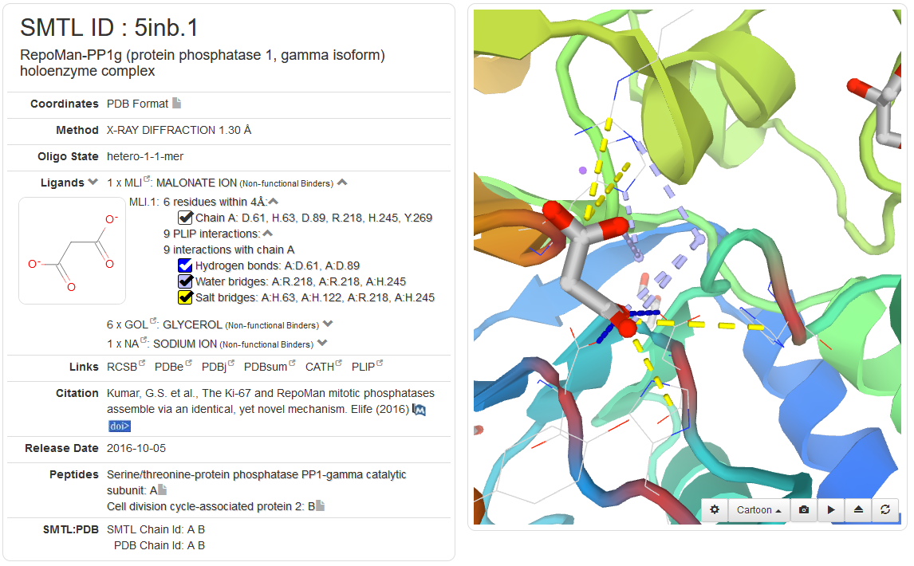
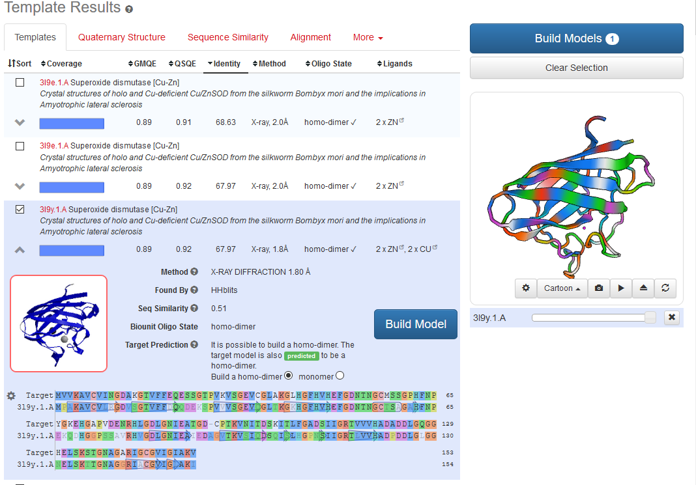
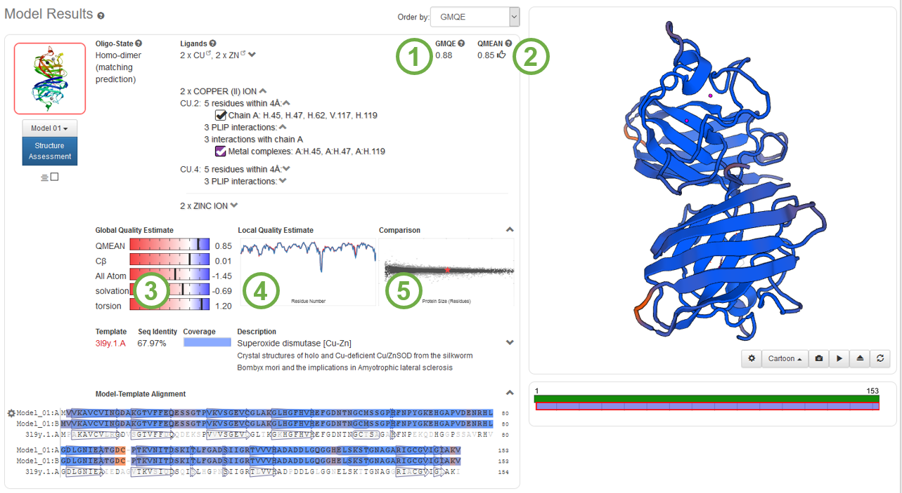

SWISS-MODEL Help
Introduction to SWISS-MODEL
SWISS-MODEL is a web-based integrated service dedicated to protein structure homology modelling. It guides the user in building protein homology models at different levels of complexity.
Building a homology model comprises four main steps: (i) identification of structural template(s), (ii) alignment of target sequence and template structure(s), (iii) model-building, and (iv) model quality evaluation. These steps require specialised software and integrate up-to-date protein sequence and structure databases. Each of the above steps can be repeated interactively until a satisfying modelling result is achieved.
The SWISS-MODEL Workspace
The SWISS-MODEL Workspace (Waterhouse et al.) is a personal web-based working environment, where several modelling projects can be carried out in parallel. Protein sequence and structure databases necessary for modelling are accessible from the workspace and are updated in regular intervals. Tools for template selection, model building, and structure quality evaluation can be invoked from within the workspace directly or via the web page menu.
From the workspace, the user accesses the current modelling projects, inspects their status and visualises the results upon job completion. Project names can be changed retroactively by clicking on the symbol next to the project title. Alternatively, the project title can also be changed by double-clicking on the title when the project results are displayed. By default, projects are stored for two weeks on the server with an option to extend the project lifetime. The remaining time until a given project is deleted from the server is displayed accordingly.
If you have built a model which you would like to maintain indefinitely and the model will be cited in a journal, you may consider depositing your model at the ModelArchive where it will receive a DOI once the journal citation is available.
Model Building
Models are computed by the SWISS-MODEL server homology modelling pipeline (Waterhouse et al.) which relies on ProMod3 (Studer et al.), an in-house comparative modelling engine based on OpenStructure (Biasini et al.).
ProMod3 extracts initial structural information from the template structure. Insertions and deletions, as defined by the sequence alignment, are resolved by first searching for viable candidates in a structural database. Final candidates are then selected using statistical potentials of mean force scoring methods. If no candidates can be found, a conformational space search is performed using Monte Carlo techniques. Non-conserved side chains are modelled using an in-house backbone-dependent rotamer library. The optimal configuration of rotamers is estimated using the graph-based TreePack algorithm (Xu et al.) by minimising the SCWRL4 energy function (Krivov et al.). As a final step, small structural distortions, unfavourable interactions or clashes introduced during the modelling process are resolved by energy minimisation. ProMod3 uses the OpenMM library (Eastman et al.) to perform the computations and the CHARMM22/CMAP force field (Mackerell et al.) for parameterisation.
Modelling Modes
Depending on the difficulty of the modelling task, three different types of modelling modes are provided, which differ in the amount of user intervention: automated mode, alignment mode, and project mode.
Automated Mode
The Automated Mode only requires the amino acid sequence or the UniProtKB accession code of the target protein as input.
The automatic pipeline identifies suitable templates based on BLAST (Camacho et al.), and HHblits (Steinegger et al.). The resulting templates are ranked according to the expected quality of the resulting models (see the Template Ranking section for more details). Top-ranked templates and alignments are compared to verify whether they represent alternative conformational states or cover different regions of the target protein. In this case, multiple templates are selected automatically and different models are built accordingly.
This mode is subject to continuous evaluation within the Continuous Automated Model Evaluation (CAMEO) platform (Haas et al.).
Please note that it is unnecessary to run automated mode by pressing "Build Model" and afterwards start the project again and "Search for Templates" only. Both options start the same template search, which is also accessible in the first case, once the models are built.
Alignment Mode
If the desired template for modelling is known and available in the SWISS-MODEL Template Library (SMTL), a target–template alignment in either FASTA or Clustal format may be used to start the modelling process, thereby skipping the template search.
The template sequence(s) should be named using the PDB ID format (i.e. “1CNR” or “1CNR_A”). The user will be asked to specify which sequence in the alignment corresponds to the target and/or the template protein from a drop-down list.
The Alignment mode allows the advanced user to invoke the modelling step starting from alternative alignments and to evaluate the quality of these alternative models.
>THN_DENCL KSCCPTTAARNQYNICRLPGTPRPVCAALSGCKIISGTGCPPGYRH- >1crnA TTCCPSIVARSNFNVCRLPGTPEALCATYTGCIIIPGATCPGDYAN-
It is possible to edit your alignment further in the input window,by clicking on the edit icon to the left of the validated input alignment. This will start edit mode, a cursor will appear in first row of the alignment. Use the arrow keys to move the cursor, then press spacebar to insert a gap and del key to delete a character. The sequence identity of the new alignment is displayed, and non-identical residues in a column will be faded to light gray. Use control-z to undo any editing, or just click the reset button to go back to the start. Click the edit icon to exit alignment editing mode.
Project Mode
In difficult modelling situations, where the correct alignment between target and template cannot be clearly determined by sequence-based methods, visual inspection and manual manipulation of the alignment can help improving the quality of the resulting model significantly.
The program DeepView - Swiss-PdbViewer (Guex et al.) can be used to generate, display, analyse, and manipulate modelling project files in the SWISS-MODEL workspace. Project files contain the superposed template structures and the alignment between the target and the template. In this mode, the user has full control over essential modelling parameters, i.e. the choice of template structures, the correct alignment, and the placement of insertions and deletions in the context of the 3D structure. Project files can also be generated by the workspace template selection tools.
The program DeepView can be downloaded for free from the Expasy web site. SWISS-MODEL supports DeepView legacy projects by relying on the previous version of the PROMOD modelling pipeline.
Ligand Modelling
Biologically relevant ligands and cofactors are modelled using a conservative homology transfer approach from the templates identified in the SMTL. Ligands in the SMTL are annotated either as: (i) relevant, non-covalently bound ligand, (ii) covalent modifications, or (iii) non-functional binders (e.g. buffer or solvent). A non-covalently bound ligand is considered for the model if it has at least three coordinating residues in the protein and those residues are conserved in the target–template alignment. The relative coordinates of the ligand(s) are transferred from the template, if the resulting atomic interactions in the model are within the expected range for van der Waals interactions and water-mediated contacts.
If the homology transfer approach described above is too restrictive, the user needs to use an appropriate ligand docking tool. To simplify this process, a model can be sent directly to SwissDock (Grosdidier et al.) by choosing the appropriate entry in the drop-down menu next to the model preview image. The user can then use SwissDock to predict molecular interactions between the model and a ligand.
Protein-ligand interactions
When ligands are present in the model, non-covalent protein–ligand interactions are annotated with PLIP (Salentin et al.). Seven types of interactions are covered: hydrogen bonds, hydrophobic contacts, pi-stacking, pi-cation interactions, salt bridges, water bridges and halogen bonds.
Oligomeric Modelling
In SWISS-MODEL, the quaternary structure annotation of the template is used to model the target sequence in its oligomeric form. The method (Bertoni et al.) is based on a supervised machine learning algorithm, Support Vector Machines (SVM), which combines interface conservation, structural clustering, and other template features to provide a quaternary structure quality estimate (QSQE). The QSQE score is a number between 0 and 1, reflecting the expected accuracy of the interchain contacts for a model built based a given alignment and template. In general a higher QSQE is "better", while a value above 0.7 can be considered reliable to follow the predicted quaternary structure in the modelling process. This complements the GMQE score which estimates the accuracy of the tertiary structure of the resulting model. QSQE is only computed if it is possible to build an oligomer and only for the top ranked templates.
The SWISS-MODEL Template Library (SMTL)
The SWISS-MODEL template library is a large structural database of experimentally determined protein structures derived from the Protein Data Bank (Berman et al).
It serves as the main repository of structural information for the modelling pipeline and provides atomic coordinates of protein structures as well as maintains sequence and profile databases which can be searched by BLAST and HHblits. Alignment-independent properties of the templates are precalculated and stored in the database, e.g. a mapping between residues resolved in the experiment and corresponding residues in the full protein sequence, predicted solvent accessibility and secondary structure information.
Individual entries of the SMTL can be inspected using the web interface. The sequence features are linked to a 3D structure viewer and can be interactively explored. SMTL IDs consist of the PDB ID, an integer representing the biounit and a capital letter for the chain ID. The SMTL chain ID is not necessary, the same as the PDB chain ID. The mapping is shown in "SMTL:PDB".
Ligands can be marked as synthetic, natural or part of crystallisation buffer. This information is used by the modelling pipeline to determine whether a ligand is considered for inclusion into the final model.

Biological Assemblies (Biounit) of Templates
The biological assembly (biounit) describes the oligomeric state, or quaternary assembly, which is thought of as the biologically most relevant form of the molecule. For a detailed description see Biological Assemblies on PDB-101.
The biological assembly reported in the SMTL is retrieved from the PDB entry.
SMTL entries are organised (if more than one assembly is available) by likely quaternary structure assemblies which are created according to the author and software-annotated oligomeric states listed in the PDB deposition. If not all chains of the asymmetric unit are included by any biounit of a PDB entry, the asymmetric unit is included as a template.
Input Data
Protein amino acid sequence or UniProtKB identifier
The amino acid sequence of the target protein can be submitted either as plain text, or in FASTA format.
Example of plain text sequence:
MVEIVYWSGTGNTEAMANEIEAAVKAAGADVESVRFEDTNVDDVASKDVILLGCPAMGSE ELEDSVVEPFFTDLAPKLKGKKVGLFGSYGWGSGEWMDAWKQRTEDTGATVIGTAIVNEM PDNAPECKELGEAAAKA
Example of FASTA sequence:
>sp|P00321|FLAV_MEGEL Flavodoxin - Megasphaera elsdenii. MVEIVYWSGTGNTEAMANEIEAAVKAAGADVESVRFEDTNVDDVASKDVILLGCPAMGSE ELEDSVVEPFFTDLAPKLKGKKVGLFGSYGWGSGEWMDAWKQRTEDTGATVIGTAIVNEM PDNAPECKELGEAAAKA
If the protein sequence is deposited in the UniProtKB (The UniProt Consortium) database, the UniProtKB identifier of the entry can be provided as input (i.e. P00321). In this case, the identifier is immediately validated and replaced with the corresponding sequence.
The "Add Hetero Target" button is provided to input multiple target sequences representing different subunits of a hetero-oligomer. The target sequences must be unique and can be submitted as plain text, FASTA sequences, or UniProtKB ACs. If a hetero-oligomer is requested, we only look for biounits of templates that contain connected chains with all desired subunits.
Target–template alignment
The following formats are currently supported: FASTA and Clustal.
Example for FASTA:
>THN_DENCL KSCCPTTAARNQYNICRLPGTPRPVCAALSGCKIISGTGCPPGYRH- >1crnA TTCCPSIVARSNFNVCRLPGTPEALCATYTGCIIIPGATCPGDYAN-
Example for Clustal:
CLUSTAL W (1.82) multiple sequence alignment
THN_DENCL KSCCPTTAARNQYNICRLPGTPRPVCAALSGCKIISGTGCPPGYRH- 46
1crnA TTCCPSIVARSNFNVCRLPGTPEAICATYTGCIIIPGATCPGDYAN- 46
.:*** ..* : **: * .. :** :** **..: ** * User Template
If the user knows the structure of the template to use for modelling, the coordinates can be uploaded in PDB format(*) together with the target protein sequence. Oligomeric templates are accepted, and it is also possible to build heteromers by adding multiple target sequences to the input. To start a modelling job with your own template:
- Press the "User Template" button
- Enter the target sequence as normal.
- Optional : to start a hetero project, you can now click "Add Hetero Target" to add another target sequence
- Click the "Add Template File..." button
- Click "Build Model"
Important: Make sure that there are no chemically modified amino acids!
If the file is not accepted, you may first try removing non-standard residues (HETATMS).
(*) A PDB-like file containing the coordinates of the template structure. For more information about PDB file format please see this link.
Please notice that the mmCIF format is currently not supported.
DeepView Project
Project files containing the superposed template structures, and the alignment between the target and template can be directly uploaded into the SWISS-MODEL Workspace. See the “Project Mode” section for further details. An example of DeepView Project and its application in modelling of Oligomeric proteins can be found here.
Immunoglobulin sequence input
If an antibody sequence is present in the input, the user is presented with a notice as well as a link to a dedicated server for antibody modelling (PIGSPro). By clicking on the link, the user is redirected to the PIGSPro server home page where the input form is pre-filled with the detected antibody variable domains. The link is displayed while the SWISS-MODEL pipeline continues running and thus, the user still has the option to use SWISS-MODEL for the modelling. An “Antibody detected” label is also shown on the different pages of the project. Antibody sequences are identified by aligning the sequence against Hidden Markov Models developed on purpose for immunoglobulins.
Template search
The degree of difficulty in identifying a suitable template for a target sequence can range from "trivial" for well-characterised protein families to "impossible" for proteins with an unknown fold. The SWISS-MODEL server provides access to a set of increasingly sophisticated methods to search for templates.
The SWISS-MODEL Template Library is searched in parallel both with BLAST and HHblits to identify templates and to obtain target–template alignments. The combined usage of these two approaches guarantees good alignments at high and low sequence identity levels.
By using the “Template Search” option, templates are searched using BLAST (Camacho et al.) and HHblits (Steinegger et al.). For the latter we build a profile for the target sequence as outlined in (Steinegger et al.) using 1 iteration of HHblits against Uniclust30 (Mirdita et al.) and use it to search all profiles of the SMTL. The found templates are listed together with relevant structural information that can be readily used to rank the templates and select the best one according to user-defined criteria.
Ranking of template results
When the template search is complete, templates and alignments are first filtered to remove redundancy. A set of maximally 50 top-ranked templates is then chosen from the full list of templates according to a simple score which combines sequence coverage and sequence similarity. The top-ranked templates and alignments are further analysed and sorted according to the expected quality of the resulting models, as estimated by GMQE and, if the target model is predicted to be an oligomer, QSQE. In detail, the default template ranking is according to the descending lexicographic order of (is_full_biounit, bin, gmqe + qs_value), where: is_full_biounit is only used for heteromers and is set to 1, if all chains from the template biounit are included for modelling, or 0 otherwise; bin is computed as ceil((gmqe - max_gmqe) / 0.1), where max_gmqe is the best gmqe observed in the templates; gmqe is the GMQE of the template; qs_value is set to QSQE of the template, if the target model is predicted to be an oligomer, or 0 otherwise.
Display of template identification results
The Template Results page serves both as an overview of available templates as well as an interactive template selection tool. The top part of the screen contains a summary of the top-ranking templates identified by the template search methods. The identified templates and the default template ranking correspond to the ones used in the Automated Mode. Please note that in the Automated Mode, additional templates, apart from the top-ranked one, may be chosen for modelling if they represent alternative conformational states or cover different regions of the target protein.
Four types of views can be available (based on the data input): (i) a Templates summary table, listing all templates in tabular form and providing an overview of relevant attributes of each template, (ii) the Quaternary Structure, (iii) an interactive chart showing the templates in relation to each other in Sequence Similarity space, and (iv) the sequence Alignment of Selected Templates.
Templates can be selected in any of these views for the subsequent modelling step. Selected templates are automatically shown in the 3D viewer. If multiple templates are selected, their structural superposition is shown, allowing instant visualisation of structural differences between them.
The complete list of all identified templates can be accessed at the bottom of the Template Results page.
In the Templates, a summary table, template annotations, and target–template alignments can be retrieved by clicking on the arrows at the left end of the table rows to expand the box with the description of the individual templates.
For each template, the following information is provided: the SMTL ID, the title of the structure, the target sequence coverage, GMQE, QSQE, the sequence identity to the target, the experimental method used to obtain the structure (and the resolution, if applicable), the oligomeric state, the ligands (if any), the sequence similarity to the target, and the template search method used.
For each template, the oligomeric state of the model is predicted. If the predicted oligomeric state of the model differs from the one of the template biounit or not all chains from the biounit are included, a warning symbol is shown (exclamation mark in a triangle). Whenever possible, the user can choose the oligomeric state manually by expanding the template view under the point "Target Prediction".
Several methods are currently used to determine the structure of a protein. In homology modelling, it is generally preferrable to use structures determined by X-ray crystallography with a resolution higher than 2.2Å as templates. Here, it is crucial to strike a trade-off between high sequence similarity and experimental resolution. We generally discourage the use of averaged NMR structures and structures determined with electron microscopy, as the latter determines the overall shape of the molecule not individual atoms locations. In individual cases, taking into account the ensemble of structures determined by NMR spectroscopy, might provide useful insights.
Target–template sequence similarity is calculated from a normalised BLOSUM62 (Henikoff et al.) substitution matrix (i.e. the largest and smallest values in the BLOSUM62 are 1 and 0, respectively). The sequence similarity of the alignment is calculated as the sum of the substitution scores divided by the number of aligned residue pairs. Gaps are not taken into account.
The Quaternary Structure view provides information on the quaternary structure analysis. Templates are clustered and displayed in a decision tree according to their oligomeric state, stoichiometry, topology and interface similarity. On the level of the oligomeric state, the templates are grouped in either monomeric, homomeric or heteromeric clusters. Stoichiometry considers only the number of chains in the structure while on the topology level the templates are grouped according to the interactions between the subunits. The interface similarity quantifies the similarity between interfaces as a function of shared interfacial contacts between the chains and thus allows to distinguish between different quaternary structures and binding modes. Each leaf of the tree corresponds to a template labelled with the PDB code and a bar indicating sequence identity to the target and coverage.
Protein–protein interaction (PPI) Fingerprint curves inform about the conservation of template interfaces. Residues participating in interfaces are subject to different evolutionary constraints than residues at the protein surface, e.g. interacting with the solvent. A value of interface conservation (y-axis) below 0 indicates that interface residues are less prone to mutate when compared to surface residues. An estimate of conservation is typically derived from a multiple sequence alignment (MSA) of homologous proteins. The alignment is sliced using different sequence identity cut-offs (x-axis) to filter the MSA of the target protein (e.g. with a sequence identity cut-off at 50% only sequences with > 50% sequence identity to the target are retained). In this way it can be observed how the various template interfaces "adapt" to the target protein family. Considering the full set of homologues, the alternative quaternary structure can have similar interface conservation, making the selection of template harder. Considering closer homologues, the PPI fingerprints of the various templates will diverge, allowing an easier selection, as better-adapted interfaces will reach lower values of interface conservation.
In the Sequence Similarity chart each template is shown as a circle. The distances between the templates in the plot is proportional to the sequence identity between them. Thus, similar sequences cluster together.
In the Alignment of Selected Templates view the alignments of the selected templates to the target are visualised.
DeepView project files can be accessed from the drop-down menu, using the 'More' button. This allows the user to visualise different alignments in the structural context of the template, helping to correct misplaced insertions and deletions, and manually adjust misaligned regions. The modified project can then be saved to disk and submitted as "Project mode" to the workspace for model building by the SWISS-MODEL pipeline.
Colour Schemes
Score Schemes
| SOA (Solvent Accessibility) | Low SOA -> High SOA | |
| b-Factor | <10< <15< <20< <25< <30< <35< <40 | Low disorder -> High Disorder |
| b-Factor Range | Low disorder -> High Disorder | |
| Entropy | Low Entropy -> High Entropy; High Conservation -> Low Conservation |
Model Schemes
| QMEAN | Low Quality -> High Quality | |
| Indels | MODEL XXXXXXXXXXX---XXX TEMPLATE XXXXXXXXXXX----XX | Highlights insertions/deletions in model |
Alignment Index Schemes
| Chain | Cycle of 5 colours | |
| Rainbow | N-teminus -> C-terminus |
Residue Schemes
| Hydrophobic | RKDENQHPYWSTGAMCFLVI | Least hydrophobic -> Most hydrophobic |
| Size | GASPVTCLINDKQEMHFRYW | Smallest -> Largest |
| Charged | ED (Negative) HKR (Positive) | |
| Polar | RKDENQ | |
| Proline | P | |
| Ser/Thr | ST | |
| Cysteine | C | |
| Aliphatic | ILV | |
| Aromatic | FYWH |
Clustal Scheme
Rules are specified in this way: (A,C,D): {50%, p,q,rstv}{85%, w,y} The column residue is given first in the round brackets; more than one may be specified, in which case the rules apply to each of these residues. Next, the rule or rules are given in curly braces; only one rule has to be met for the colour to be applied. The minimum percentage is given first, followed by the residue or residues which must meet or exceed this percentage within the column. If a group of residues is concatenated together, such as 'rstv', then any combination of these residues in total must meet or exceed the given percentage for the colour to be applied. For residues or residue groups separated by commas, at least one of these must by itself exceed the percentage.
| (WLVIMF): {50%, p}{60%, wlvimafcyhp} (A): {50%, p}{60%, wlvimafcyhp}{85%, t,s,g} (C): {50%, p}{60%, wlvimafcyhp}{85%, s} | |
| (KR): {60%, kr}{85%, q} | |
| (T): {50%, ts}{60%, wlvimafcyhp} (S): {50%, ts}{80%, wlvimafcyhp} (N): {50%, n}{85%, d} (Q): {50%, qe}{60%, kr} | |
| (C) {85%, c} | |
| (D): {50%, de,n} (E): {50%, de,qe} | |
| (G): {always} | |
| (HY): {50%, p}{60%, wlvimafcyhp} | |
| (P): {always} |
Display of modelling results
Coordinates of the model, the corresponding alignment and quality evaluations can be accessed and downloaded via web browser from the workspace.
Model details
This section allows to display the 3D structure of models and their target–template sequence alignment as well as to download the model coordinates. For better assistance, many sequence features/scoring schemes are synchronised with the 3D molecular view.
The colouring of the alignment can be changed by clicking on the "Options" button (cog icon) and selecting the desired colouring scheme.
Model coordinates are available in two different formats:
- DeepView project files
- PDB format
If the model has been build using the Automated Mode, the information about the selected template(s) is provided with cross-references to structural databases via the link to the SWISS MODEL Template library.
By default, the final model is presented in colours based on the QMEAN model quality. This allows instant visualisation of regions of the model that are well or poorly modelled. Information about the oligomeric state, as well as bound ligands and cofactors are provided. The user can alternatively choose to see the results in a well formatted report page which shows all the results in a readable format that can be copied and pasted to other documents. The user can download an archive file containing all the models and reports for the given target sequence.
There are very rare cases where modelling fails because the template structure does not contain enough backbone atoms in the aligned region (we need at least N-CA-C to be available and we skip d-peptides). In such a case, we do not return any model structure.
Currently, there are three very rare cases where major modelling issues appear. These issues are displayed with a prominent warning sign and a potentially sub-optimal model is displayed. The models may locally still be valid and useful. We suggest to carefully look at the local QMEAN scores to judge the model. The three issues are:
- If the target–template alignment contains very large deletions mixed with small aligned patches, we may return an incomplete model as we are unable to cleanly resolve the deletion. Apart from the unresolved deletion, these could still be high quality models.
- A "ring punch" is defined by a bond passing through the carbon ring of another amino acid (His, Pro, Phe, Tyr, Trp). This is an unfortunate and unpredictable effect of the final energy minimisation in the modelling process. Apart from the residues involved in the "ring punch", these could still be high quality models.
- If a very bad template structure is used (so far we have only seen this with user-uploaded structures), the energy minimization may fail. This is usually caused by coordinates of different atoms occupying almost the same position. In such a case, we return the model without any energy minimization applied on it. Unless the failure was caused by a local problem in the template structure, this is expected to lead to very low quality models.
Future versions of ProMod3 may resolve the issues above.

Model evaluation
GMQE
GMQE (Global Model Quality Estimation) is a quality estimation which combines properties from the target–template alignment and the template structure. They are combined using a multilayer perceptron. The resulting GMQE score is expressed as a number between 0 and 1, reflecting the expected accuracy of a model built with that alignment and template, normalized by the coverage of the target sequence. Higher numbers indicate higher reliability. Once a model is built, the GMQE ((1) in the figure above) gets updated for this specific case by also taking into account the QMEAN score of the obtained model in order to increase reliability of the quality estimation.
QMEAN
QMEAN (Studer et al.) is a composite estimator based on different geometrical properties and provides both global (i.e. for the entire structure) and local (i.e. per residue) absolute quality estimates on the basis of one single model.
The QMEAN Z-score ((2) in the figure above) provides an estimate of the "degree of nativeness" of the structural features observed in the model on a global scale and is described in Benkert et al.. It indicates whether the QMEAN score of the model is comparable to what one would expect from experimental structures of similar size. QMEAN Z-scores around zero indicate good agreement between the model structure and experimental structures of similar size. Scores of -4.0 or below are an indication of models with low quality. This is also highlighted by a change of the "thumbs-up" symbol to a "thumbs-down" symbol next to the score.
QMEAN consists of four individual terms. The four individual terms of the global QMEAN quality scores are also listed ((3) in the figure above). The white area in the bar plots (numerical values close to zero) indicates that the property is similar to what one would expect from experimental structures of similar size. Positive values indicate that the model scores higher than experimental structures on average. Negative numbers indicate that the model scores lower than experimental structures on average. The QMEAN Z-score itself is shown on top. The individual Z-scores compare the interaction potential between Cβ atoms only, all atoms, the solvation potential and the torsion angle potential. For details, please refer to the publication.
Besides using the terms as for global scoring, the accuracy of the QMEAN local scores is enhanced by QMEANDisCo (Studer et al.). QMEANDisCo assesses the consistency of observed interatomic distances in the model with ensemble information extracted from experimentally determined protein structures that are homologues to the target sequence. The “Local Quality” plot ((4) in the figure above) shows, for each residue of the model (reported on the x-axis), the expected similarity to the native structure (y-axis). Typically, residues showing a score below 0.6 are expected to be of low quality. Different model chains are shown in different colours. If the model is downloaded, the local score is reported in the B-factor column of the PDB file. The local quality can also be visualised by choosing the colour scheme "QMEAN".
In the "Comparison" plot ((5) in the figure above), model quality scores of individual models are related to scores obtained for experimental structures of similar size. The x-axis shows protein length (number of residues). The y-axis is the normalized QMEAN score. Every dot represents one experimental protein structure. Black dots are experimental structures with a normalized QMEAN score within 1 standard devation of the mean (|Z-score| between 0 and 1), experimental structures with a |Z-score| between 1 and 2 are grey. Experimental structure that are even further from the mean are light grey. The actual model is represented as a red star. The mean and standard deviation of the experimental structures around the x-location of the star are the basis to calculate the QMEAN Z-score of the model ((2) in the figure above), i.e. how many standard deviations from the mean scores my model.
Modelling report
The SWISS-MODEL Homology Modelling Report offers a summary of all Models built in the project.
Note: The report is accessible (i) per model via a drop-down menu, next to the model in the Models view or (ii) for all models in report.html in the downloaded file when choosing to download the project by pressing the download button below the project title.
It is structured in the following sections:
- Model building Report: Contains project name, project date and references. The target sequence is in Table T1 of the Report.
- Results: Version of the SWISS-MODEL template library and PDB release. All identified templates are listed in Table T2.
- Models: Models are listed sequentially with each entry showing a picture of
the model, a link to the PDB file, the version of the modelling engine,
the oligomeric state, the ligands (if any), the global model quality
estimate, and the QMEAN score.
A graphical representation of the QMEAN score and its four terms separately, the local quality estimate plot, and the comparison with non-redundant set of PDB structures are also provided. For the template, a link to the template itself is provided together with the following information: the title of the structure, the target sequence coverage, the sequence identity to the target, the experimental method used to obtain the structure (and the resolution, if applicable), the oligomeric state, the ligands (if any), the sequence similarity to the target, the template search method used. - Save Project Locally: Allows to download the project as a zip file.
The main folder contains the Model report (report.html), images folder (banner for the Report), and the model folder. Each model has its own subfolder.
Membrane Prediction
Biounits of transmembrane proteins are identified in the SMTL solely based on structural information. An implicit solvation model implemented in OpenStructure (mol.alg.FindMembrane) estimates the optimal membrane location for each biounit and performs a classification based on energetic and geometric criteria.
The original algorithm and the used energy function are described by Lomize et al.
The membrane annotation is transferred to a model if at least 80% of all biounit transmembrane residues are aligned with the target sequence(s).